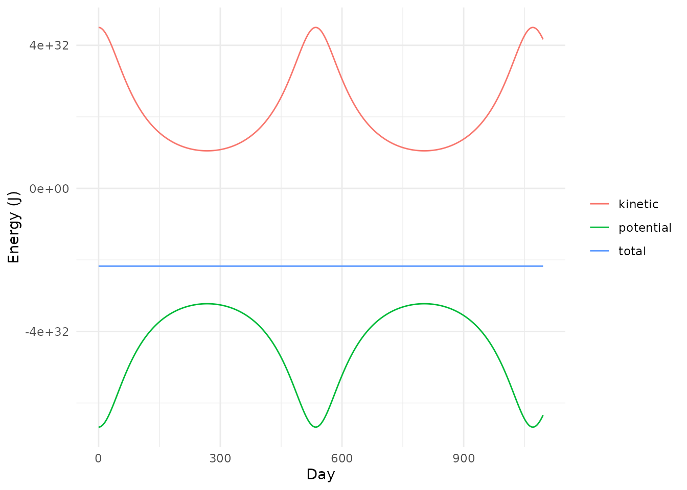
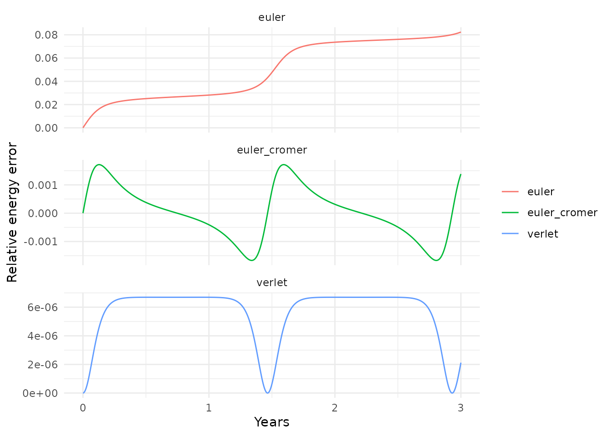
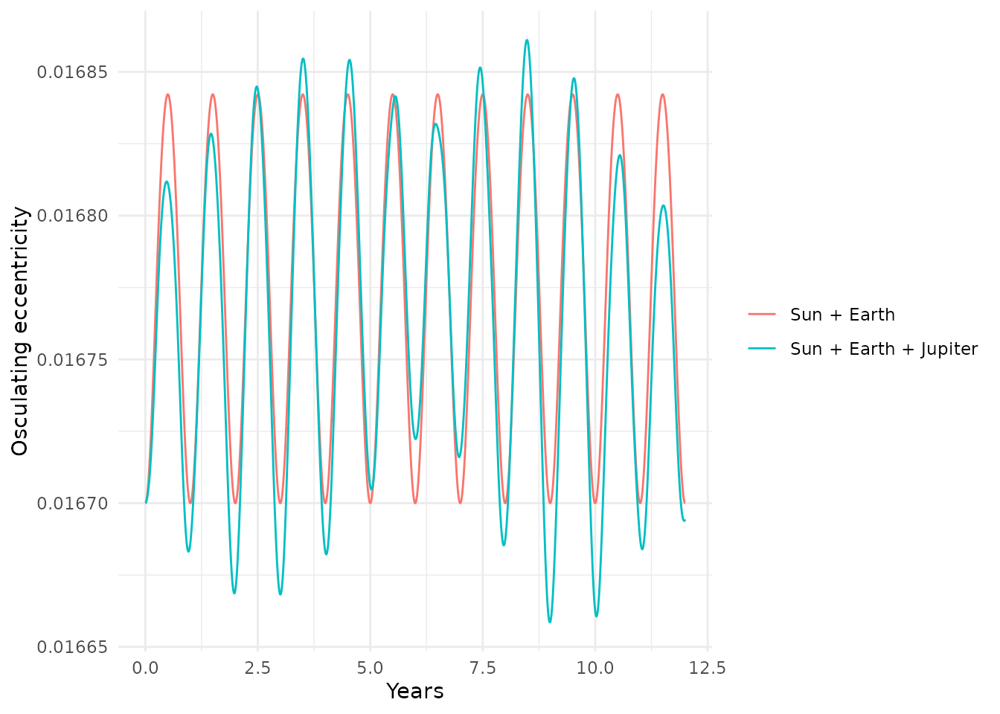
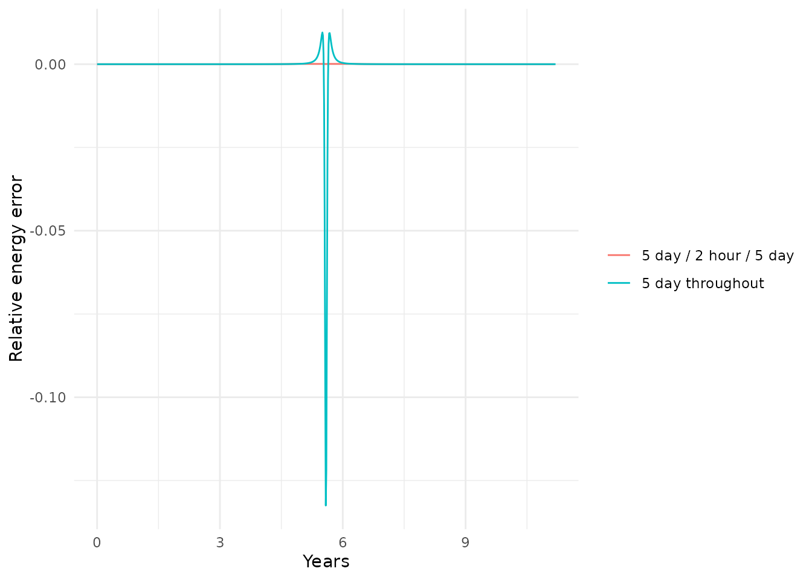

library(orbitr)
library(dplyr)
#>
#> Attaching package: 'dplyr'
#> The following objects are masked from 'package:stats':
#>
#> filter, lag
#> The following objects are masked from 'package:base':
#>
#> intersect, setdiff, setequal, union
library(ggplot2)A simulation always produces something. The question is
whether the something is physics or numerical artifact, and a plot of
the trajectories won’t always tell you. This article covers the
functions for finding out: get_energy(),
get_momentum(), and get_angular_momentum()
compute the quantities that real gravity keeps constant,
conserved_quantities() reports how well a run kept them,
get_orbital_elements() tells you what orbit a body is
actually on, and continue_simulation() lets you fix the
most common problem — a time step that’s too large for part of the run —
without re-running everything.
Energy, Momentum, and Angular Momentum
Newtonian gravity conserves three things exactly: total energy, total linear momentum, and total angular momentum. Three getters compute them at every time step of a run:
star_planet <- create_system() |>
add_body("Star", mass = 1e30) |>
add_body("Planet", mass = 1e24, x = 1e11, vy = 30000)
sim <- simulate_system(star_planet, time_step = seconds_per_hour * 6,
duration = seconds_per_year * 3)
get_energy(sim)
#> # A tibble: 4,384 × 4
#> time kinetic potential energy
#> <dbl> <dbl> <dbl> <dbl>
#> 1 0 4.50e32 -6.67e32 -2.17e32
#> 2 21600 4.50e32 -6.67e32 -2.17e32
#> 3 43200 4.50e32 -6.67e32 -2.17e32
#> 4 64800 4.50e32 -6.67e32 -2.17e32
#> 5 86400 4.50e32 -6.67e32 -2.17e32
#> 6 108000 4.50e32 -6.67e32 -2.17e32
#> 7 129600 4.50e32 -6.67e32 -2.17e32
#> 8 151200 4.50e32 -6.67e32 -2.17e32
#> 9 172800 4.50e32 -6.67e32 -2.17e32
#> 10 194400 4.50e32 -6.67e32 -2.17e32
#> # ℹ 4,374 more rowskinetic is
over the bodies, potential is
over the pairs, and energy is the total. The two trade off
along the orbit — the planet speeds up as it falls inward — while the
total stays put:
energy <- get_energy(sim)
bind_rows(
energy |> transmute(time, name = "kinetic", value = kinetic),
energy |> transmute(time, name = "potential", value = potential),
energy |> transmute(time, name = "total", value = energy)
) |>
ggplot(aes(x = time / seconds_per_day, y = value, color = name)) +
geom_line() +
labs(x = "Day", y = "Energy (J)", color = NULL) +
theme_minimal()
get_momentum() and get_angular_momentum()
do the same for
and
:
get_momentum(sim)
#> # A tibble: 4,384 × 4
#> time px py pz
#> <dbl> <dbl> <dbl> <dbl>
#> 1 0 0 3e28 0
#> 2 21600 -17179869184 3e28 0
#> 3 43200 0 3e28 0
#> 4 64800 68719476736 3e28 0
#> 5 86400 68719476736 3e28 0
#> 6 108000 0 3e28 0
#> 7 129600 0 3e28 0
#> 8 151200 -137438953472 3e28 0
#> 9 172800 137438953472 3e28 0
#> 10 194400 0 3e28 0
#> # ℹ 4,374 more rows
get_angular_momentum(sim)
#> # A tibble: 4,384 × 4
#> time Lx Ly Lz
#> <dbl> <dbl> <dbl> <dbl>
#> 1 0 0 0 3e39
#> 2 21600 0 0 3e39
#> 3 43200 0 0 3e39
#> 4 64800 0 0 3e39
#> 5 86400 0 0 3e39
#> 6 108000 0 0 3e39
#> 7 129600 0 0 3e39
#> 8 151200 0 0 3e39
#> 9 172800 0 0 3e39
#> 10 194400 0 0 3e39
#> # ℹ 4,374 more rowsThe total momentum here is not zero — the star was started at rest
while the planet moves — so the system’s center of mass drifts. That’s
not an error; it’s what
shift_reference_frame(sim, "barycenter") is for.
Conserved Quantities
A numerical integrator does not conserve all three exactly, and how
badly it fails is a direct measure of how much to trust the run.
conserved_quantities() joins the three getters and adds
each quantity’s relative error against its initial value:
cq <- conserved_quantities(sim)
cq
#> # A tibble: 4,384 × 13
#> time kinetic potential energy px py pz Lx Ly Lz
#> <dbl> <dbl> <dbl> <dbl> <dbl> <dbl> <dbl> <dbl> <dbl> <dbl>
#> 1 0 4.50e32 -6.67e32 -2.17e32 0 3e28 0 0 0 3e39
#> 2 21600 4.50e32 -6.67e32 -2.17e32 -17179869184 3e28 0 0 0 3e39
#> 3 43200 4.50e32 -6.67e32 -2.17e32 0 3e28 0 0 0 3e39
#> 4 64800 4.50e32 -6.67e32 -2.17e32 68719476736 3e28 0 0 0 3e39
#> 5 86400 4.50e32 -6.67e32 -2.17e32 68719476736 3e28 0 0 0 3e39
#> 6 108000 4.50e32 -6.67e32 -2.17e32 0 3e28 0 0 0 3e39
#> 7 129600 4.50e32 -6.67e32 -2.17e32 0 3e28 0 0 0 3e39
#> 8 151200 4.50e32 -6.67e32 -2.17e32 -137438953472 3e28 0 0 0 3e39
#> 9 172800 4.50e32 -6.67e32 -2.17e32 137438953472 3e28 0 0 0 3e39
#> 10 194400 4.50e32 -6.67e32 -2.17e32 0 3e28 0 0 0 3e39
#> # ℹ 4,374 more rows
#> # ℹ 3 more variables: energy_error <dbl>, momentum_error <dbl>,
#> # angular_momentum_error <dbl>What should you expect?
-
Momentum and angular momentum should sit at
floating-point rounding, around
1e-15, for the Velocity Verlet and Euler-Cromer integrators, at any time step. Both methods are built from “kicks” (velocity updates) and “drifts” (position updates) that conserve these two quantities exactly. If either one drifts, the problem is in your setup, not the step size. - Energy is conserved only approximately. With Verlet the error oscillates once per orbit and stays inside a band whose width scales as the square of the time step. It should not grow.
Here are all three integrators side by side:
runs <- bind_rows(lapply(c("verlet", "euler_cromer", "euler"), function(m) {
simulate_system(star_planet, time_step = seconds_per_hour * 6,
duration = seconds_per_year * 3, method = m) |>
conserved_quantities() |>
mutate(method = m)
}))
runs |>
ggplot(aes(x = time / seconds_per_year, y = energy_error, color = method)) +
geom_line() +
facet_wrap(~ method, scales = "free_y", ncol = 1) +
labs(x = "Years", y = "Relative energy error", color = NULL) +
theme_minimal()
Verlet’s error is a bounded wiggle. Euler-Cromer’s is a larger bounded wiggle. Euler’s climbs without limit — that’s the energy being pumped into the orbit that makes it spiral outward. The angular momentum column tells the same story more sharply:
runs |>
group_by(method) |>
summarise(max_angular_momentum_error = max(angular_momentum_error),
max_energy_error = max(abs(energy_error)))
#> # A tibble: 3 × 3
#> method max_angular_momentum_error max_energy_error
#> <chr> <dbl> <dbl>
#> 1 euler 3.75e- 2 0.0824
#> 2 euler_cromer 4.43e-15 0.00171
#> 3 verlet 3.02e-15 0.00000669Reading the energy plot
Four shapes cover almost everything:
- A narrow oscillating band — healthy. Halving the step should shrink it by about four.
- A wide oscillating band — the step is too large for the tightest or most eccentric orbit in the system. Halve it and compare.
-
A steady drift — either
method = "euler", or a step so large that even Verlet’s guarantees have broken down. - A sudden jump — a close encounter the step couldn’t resolve. Everything after the jump is on a different orbit from everything before it.
One thing to know: if you ran with softening, the system
conserves the softened energy. get_energy() and
conserved_quantities() read the softening value the
simulation was run with from the output, so this is handled
automatically; if you compute energy yourself, use the same softened
distance.
What Orbit Is It Actually On?
add_body_keplerian() turns six orbital elements into a
position and velocity. get_orbital_elements() goes the
other way: from the simulated position and velocity of a body relative
to a parent, it recovers the semi-major axis, eccentricity, inclination,
node, argument of periapsis, and true anomaly at every time step.
mars <- create_system() |>
add_sun() |>
add_planet("Mars", parent = "Sun", nu = 45) |>
simulate_system(time_step = seconds_per_day, duration = seconds_per_day * 687)
elements <- get_orbital_elements(mars, "Mars", "Sun")
elements
#> # A tibble: 688 × 8
#> time a e i lan arg_pe nu period
#> <dbl> <dbl> <dbl> <dbl> <dbl> <dbl> <dbl> <dbl>
#> 1 0 227900000000. 0.0934 1.85 49.6 286. 45.0 59330240.
#> 2 86400 227900009834. 0.0934 1.85 49.6 286. 45.6 59330244.
#> 3 172800 227900019718. 0.0934 1.85 49.6 286. 46.2 59330247.
#> 4 259200 227900029649. 0.0934 1.85 49.6 286. 46.8 59330251.
#> 5 345600 227900039625. 0.0934 1.85 49.6 286. 47.4 59330255.
#> 6 432000 227900049643. 0.0934 1.85 49.6 286. 48.0 59330259.
#> 7 518400 227900059701. 0.0934 1.85 49.6 286. 48.6 59330263.
#> 8 604800 227900069797. 0.0934 1.85 49.6 286. 49.2 59330267.
#> 9 691200 227900079927. 0.0934 1.85 49.6 286. 49.8 59330271.
#> 10 777600 227900090090. 0.0934 1.85 49.6 286. 50.4 59330275.
#> # ℹ 678 more rowsFor a two-body system the elements are constants of the motion, so
the only thing that changes along the run is nu, the
position on the orbit. How constant the rest are is another integration
check:
elements |>
summarise(a_spread = max(a) - min(a),
e_spread = max(e) - min(e),
period_days = mean(period) / seconds_per_day)
#> # A tibble: 1 × 3
#> a_spread e_spread period_days
#> <dbl> <dbl> <dbl>
#> 1 1861037. 0.0000433 687.With a third body the elements are no longer constant — the orbit is being perturbed, and the elements at each instant describe the osculating orbit, the ellipse the body would follow from that moment if the perturbation were switched off. Watching them drift is how astronomers describe perturbations. Here is Earth’s eccentricity with and without Jupiter:
earth_alone <- create_system() |>
add_sun() |>
add_planet("Earth", parent = "Sun") |>
simulate_system(time_step = seconds_per_day, duration = seconds_per_year * 12)
earth_jupiter <- create_system() |>
add_sun() |>
add_planet("Earth", parent = "Sun") |>
add_planet("Jupiter", parent = "Sun", nu = 90) |>
simulate_system(time_step = seconds_per_day, duration = seconds_per_year * 12)
bind_rows(
get_orbital_elements(earth_alone, "Earth", "Sun") |> mutate(system = "Sun + Earth"),
get_orbital_elements(earth_jupiter, "Earth", "Sun") |> mutate(system = "Sun + Earth + Jupiter")
) |>
ggplot(aes(x = time / seconds_per_year, y = e, color = system)) +
geom_line() +
labs(x = "Years", y = "Osculating eccentricity", color = NULL) +
theme_minimal()
The wiggles repeat each time Jupiter laps Earth, and they are real physics, not integration error — the Sun + Earth line is flat.
The elements are also the sharpest test of a time step there is.
Energy conservation is necessary but not sufficient: a Verlet run with
too coarse a step can keep energy bounded while its orbit slowly
precesses for no physical reason. If arg_pe drifts
in a two-body run, that’s the integrator, and the drift rate falls by
about four when you halve the step.
A note on the gravitational parameter
By default get_orbital_elements() uses
,
the same convention as add_body_keplerian(), so elements
round-trip exactly. The simulation itself moves both bodies, and the
true two-body orbit has
.
The difference is negligible for every planet, and about 1% for the
Moon; pass
mu = gravitational_constant * (mass_earth + mass_moon) if
you need the exact lunar orbit.
Continuing a Run
simulate_system() uses one fixed time step for the whole
run. That’s the right design for planets, and the wrong one for a comet:
Halley’s Comet spends 73 of its 75 years crawling through the outer
solar system and a few weeks sprinting around the Sun at sixty times the
speed. A step that is fine at aphelion is useless at perihelion.
continue_simulation() picks up a run from its last state
with whatever step you like, and appends the new rows with
time continuing from where it left off. So you can take
large steps where nothing happens and small ones where everything
does:
comet <- create_system() |>
add_sun() |>
add_body_keplerian("Comet", mass = 1e14, parent = "Sun",
a = 5 * distance_earth_sun, e = 0.9, nu = 180)
# Coarse on the way in, fine through perihelion, coarse on the way out
segmented <- comet |>
simulate_system(time_step = seconds_per_day * 5, duration = seconds_per_year * 4.9) |>
continue_simulation(time_step = seconds_per_hour * 2, duration = seconds_per_year * 1.4) |>
continue_simulation(time_step = seconds_per_day * 5, duration = seconds_per_year * 4.9)
n_distinct(segmented$time)
#> [1] 6851Compare with the same orbit run entirely at the coarse step:
uniform <- simulate_system(comet, time_step = seconds_per_day * 5,
duration = seconds_per_year * 11.2)
bind_rows(
conserved_quantities(segmented) |> mutate(run = "5 day / 2 hour / 5 day"),
conserved_quantities(uniform) |> mutate(run = "5 day throughout")
) |>
ggplot(aes(x = time / seconds_per_year, y = energy_error, color = run)) +
geom_line() +
labs(x = "Years", y = "Relative energy error", color = NULL) +
theme_minimal()
The uniform run makes all of its error in the few weeks around perihelion, in one spurious kick, and leaves on a different orbit. The segmented run resolves the passage at a small fraction of the cost of taking two-hour steps for eleven years.
continue_simulation() reads the gravitational constant,
integrator, and softening from the previous segment, so you only need to
say what changes. Each segment is an ordinary Verlet run; the only
disturbance is about one step’s worth of error at each switch.
Editing between segments
Because the handoff goes through the output tibble, you can change
the state between segments: give a body a velocity kick (a rocket burn),
remove one, or add one with system_from_simulation(), which
rebuilds an orbit_system from any snapshot:
later <- system_from_simulation(segmented, time = seconds_per_year * 5)
later
#> ───────────────────────────────── orbit_system ─────────────────────────────────
#> G: 6.6743e-11 (standard)
#> Bodies: 2
#>
#> # A tibble: 2 × 8
#> id mass x y z vx vy vz
#> <chr> <dbl> <dbl> <dbl> <dbl> <dbl> <dbl> <dbl>
#> 1 Sun 1.99e30 -5.28e- 5 -9.25e- 6 0 -9.63e-13 -3.39e-13 0
#> 2 Comet 1 e14 -3.71e+11 -2.98e+11 0 1.92e+ 4 3.69e+ 3 0Modify it with add_body() or remove_body()
like any other system, and simulate again.